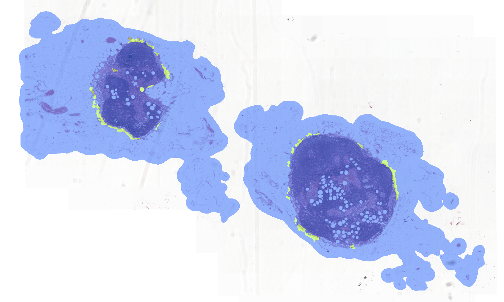

Current-pipeline Bora score
Slide normal_019 is included in the 26-slide test gallery. The Bora binary head was fitted only on tumor_093; Virchow2 was pretrained separately. Class-aware U-Net, DeepLabV3+, MedSAM and VISTA-PATH results under the current one-slide comparison remain pending.
| Official known pixels | 620,363 |
|---|---|
| Metastasis IoU | Undefined: no reference metastasis |
| Boundary F1 at 5 µm | Undefined: no reference metastasis |
| Native false-positive tissue | 0.218 mm² |
| Shared-support false-positive tissue | 0.154 mm² |
Native prediction is primary; shared-support is a sensitivity analysis. The normal_019 tissue-only scoring denominator was corrected after visual review; this is a post hoc development result. Its reference was inspected before the current protocol; this score is descriptive. No full source slide is distributed on this page.
Bora prediction · reviewed tissue frame
This image shows the current tumor_093-only Bora output on H&E. Blue indicates predicted non-metastatic tissue; yellow-green indicates predicted metastasis. The view includes the reviewed tissue region and a narrow margin. It is a prediction, not the expert mask.

The other four methods are pending under the current one-slide comparison.